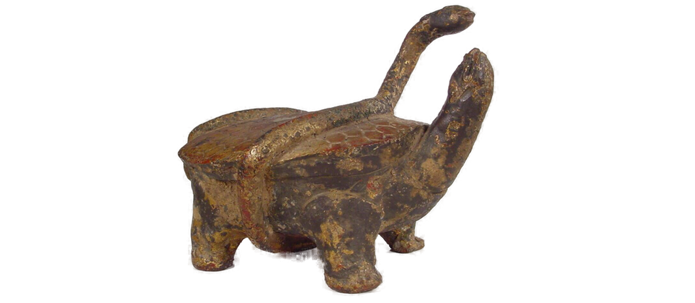
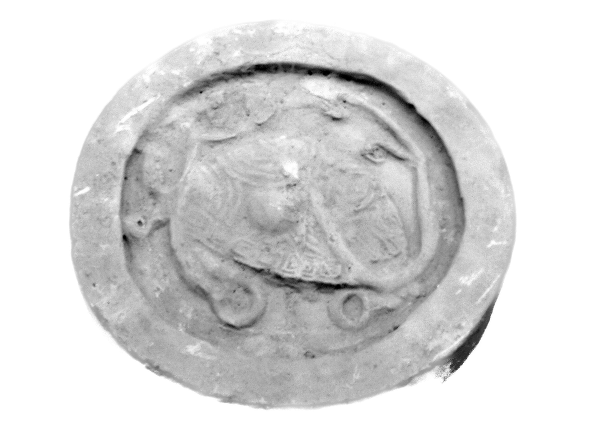
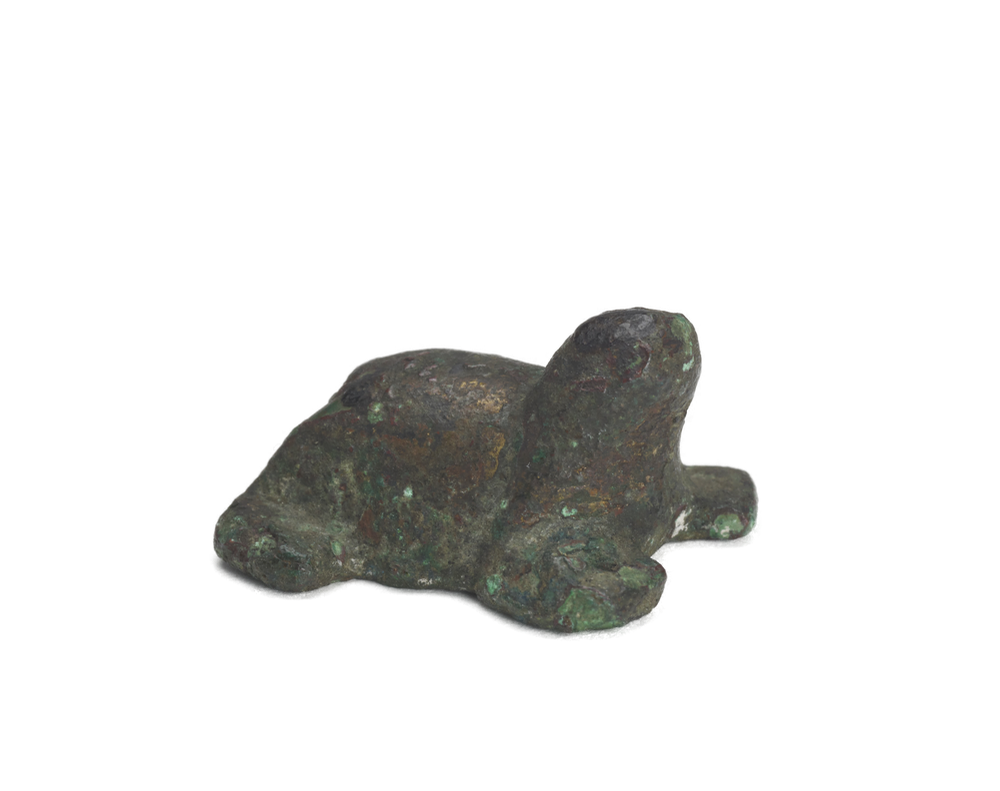
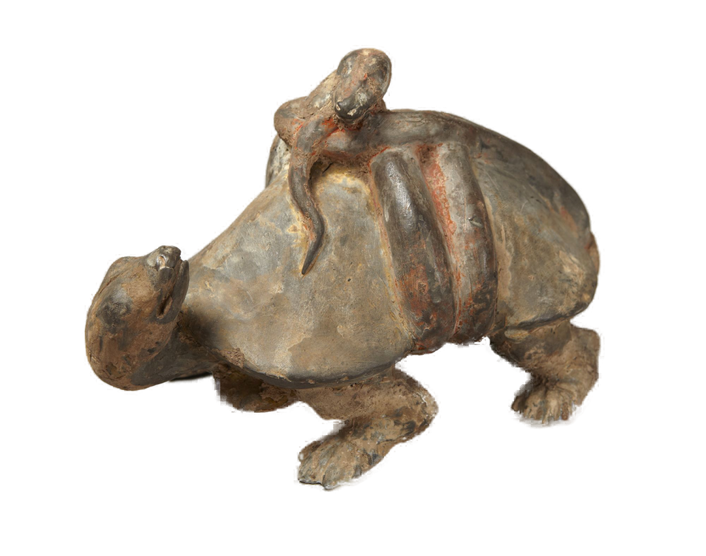
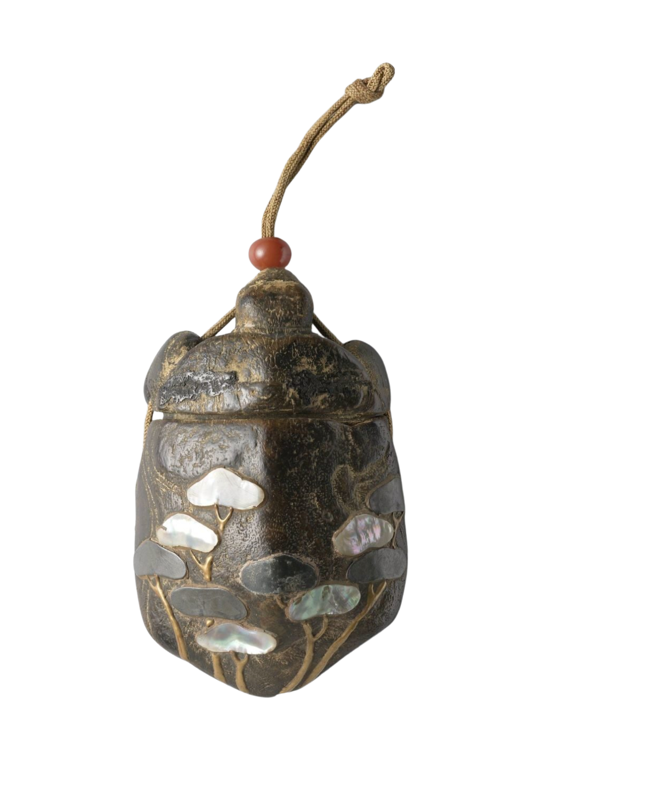
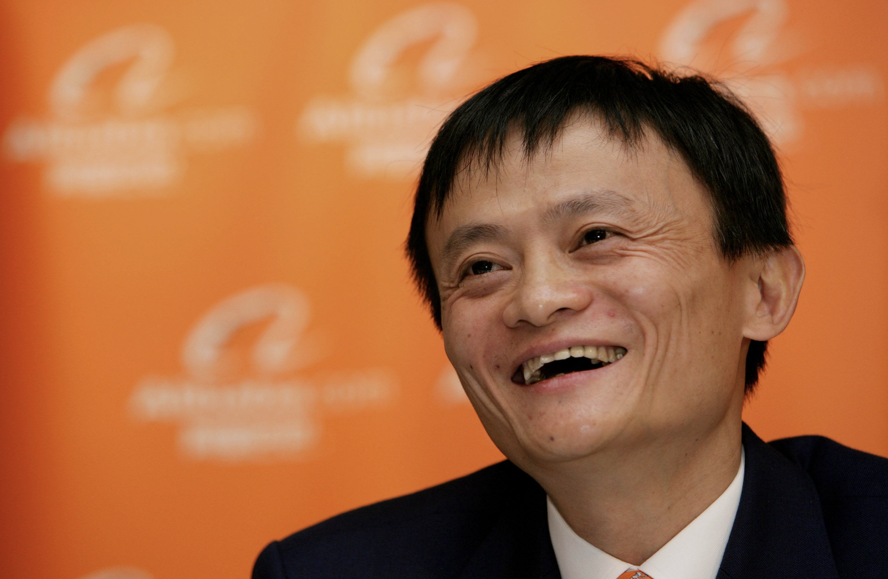
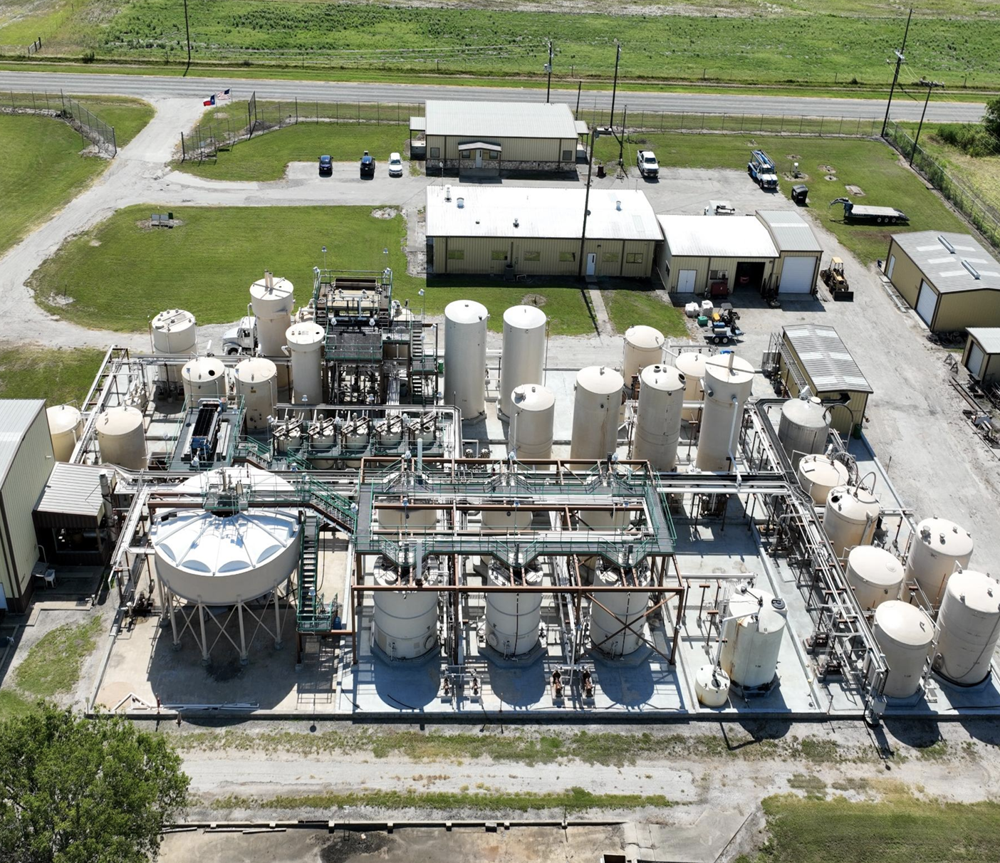

In the ancient cosmology of Chinese feng shui 風水, the heavens are divided among four celestial guardians — each assigned a direction, a season, a force of nature. And to the north, standing apart from all of them, is 玄武. The Black Tortoise. Not chosen for its speed or strength. Not the dragon's fire. Not the tiger's fury. But for the one quality the others do not possess — the capacity to endure. Wrapped in winter. Rooted in water. Moving only when it chose to move.
This is the spirit we carry.
In markets, as in nature, this quality is the rarest of all. Easily forgotten and dismissed. The most durable advantage is not intelligence, not information, not technology. It is patience. The willingness to sit still while the world moves frantically around you.

The wisdom of crowds is real. So is its madness. Euphoria inflates what reason cannot justify. Panic destroys what fundamentals still support. The opportunity is never in the consensus. It is in what the consensus has chosen not to see.
Time is the mechanism through which the market corrects its own errors. We do not trade. We own. Our strategy is grounded in the willingness to hold through discomfort while others capitulate. Others will misjudge our temperament and approach.
The goal is never to avoid risk. It is to find situations where the downside is bounded and the upside is not. Where heads you win considerably, and tails you don't lose much. That asymmetry, patiently sought, is the only position worth taking.
SOC · Speculation · 2025–2026
Sable Offshore Corp
Regulatory overhang misread as permanent impairment

EWBC · Investment · 2023
EastWest Bancorp
SVB crisis created indiscriminate regional bank selling
NBR · Investment
Nabors Industries
Debt-laden driller entering a supercycle as geopolitical fractures reprice global energy
GOOGL · Investment · 2025
Alphabet
Liberation Day selloff and panic over AI created a generational entry point

BABA · Investment
Alibaba
State pressure and market panic obscured a global supply chain giant pivoting into AI
LULU · Investment
Lululemon
Wall Street saw margin pressure and a stumbling brand. The balance sheet and China told a different story

UEC · Speculation
Uranium Energy Corp
Uranium at cycle lows as US energy diversification made a nuclear renaissance inevitable
We inherited a way of seeing. The rest is earned.